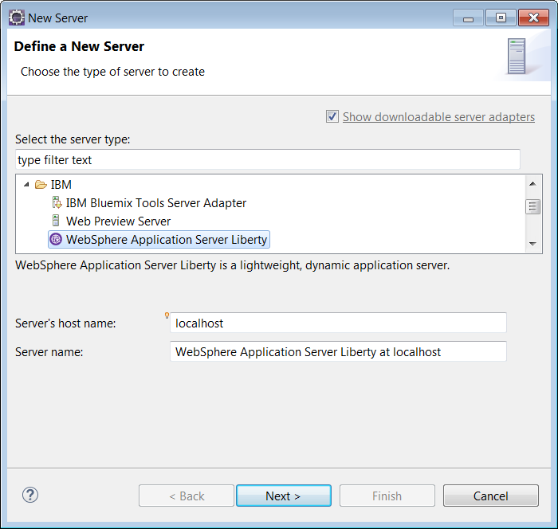
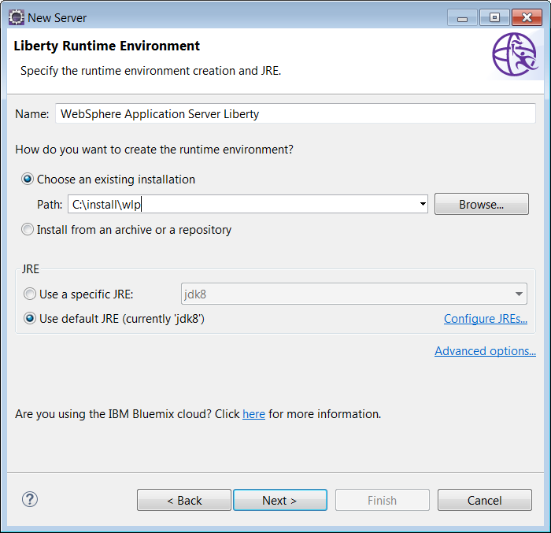
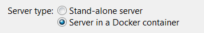
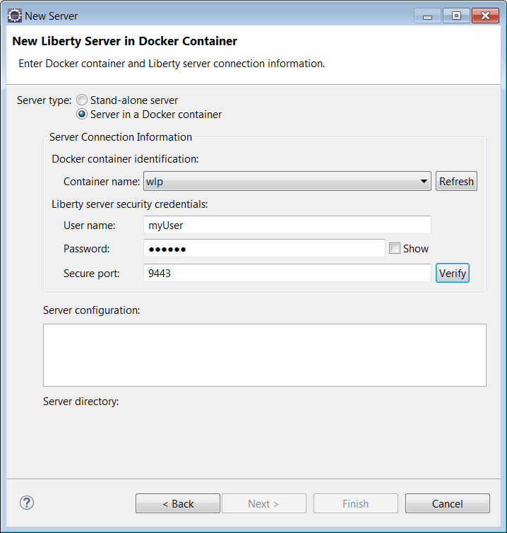
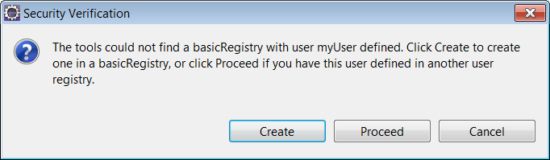
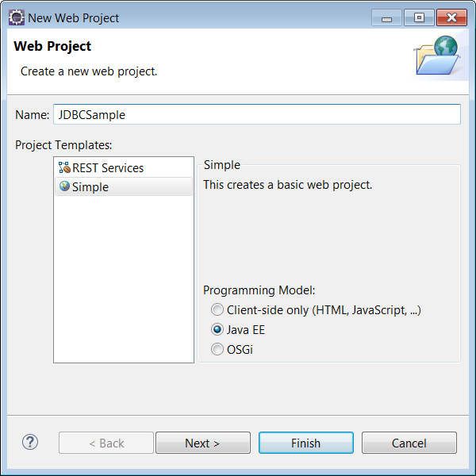
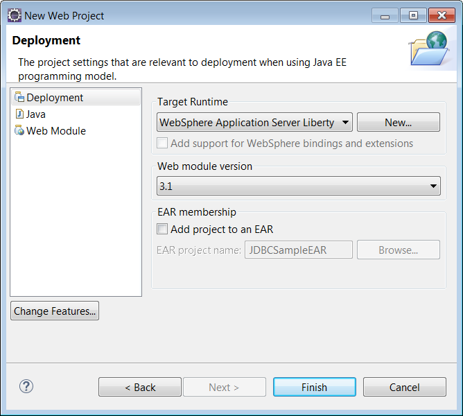
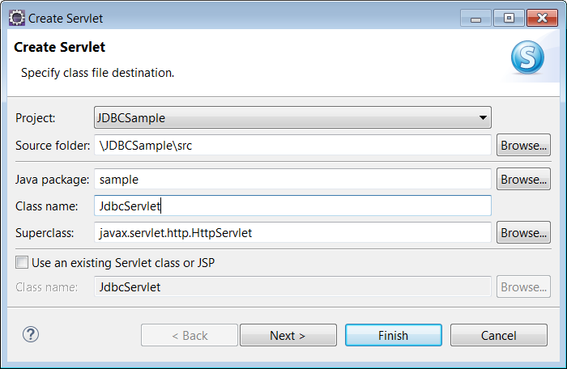
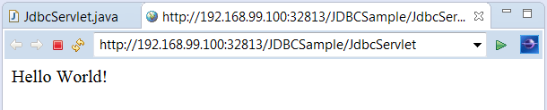
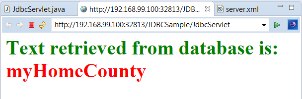

How to develop a simple JDBC application using WebSphere Developer Tools (WDT) for Eclipse on a Liberty runtime in a Docker container. The JDBC application will be based on the Servlet JDBC Sample.
Before you start:
- Install Eclipse IDE for JavaEE Developers with WebSphere Developer Tools and a recent Liberty runtime
- Install Docker Engine
- Get a copy of
derby.jarfrom the Apache download site (thelib distributionis sufficient)
Creating a Docker container running Liberty
Next, create a Docker container called wlp which runs WebSphere Liberty:
docker run -e LICENSE=accept -p 8001:9080 -p 8002:9443 --name=wlp -td websphere-liberty
The HTTP and HTTPS ports both need to be mapped to the host using the -p option (8001 and 8002 can be replaced with any available ports on your host).
If you have not already pulled the websphere-liberty image, it will be downloaded automatically by the command, which may take a few minutes.
Creating a representation of the server in WDT
Once the container is running, you can create a workspace representation of the server in WDT:
- Right-click in the Servers view and select New > Server….
- Under IBM select WebSphere Application Server Liberty for the server type. Make sure the Server’s host name is set to
localhostand click Next:
 - Specify the path to your Liberty runtime installation and click Next (if you already have a Liberty runtime defined in your workspace then this page will be skipped by the wizard):
 - Select Server in a Docker container for the Server type:
 - Select the container (we named our container
wlp) and fill in a user name and password (a user registry will be automatically created for you using this name and password). Also specify the secure port. Thewebsphere-libertyimage uses9443for the secure port by default.
 - Click the Verify button. When the dialog pops up asking if you want to create a user registry for the user name and password you specified, click Create:
 - Accept any untrusted security certificate dialogs, then click Finish.
{kind=link}
{kind=link}
{kind=link}
{kind=link}
{kind=link}
The server now shows in the Servers view. It displays the container name with the machine name in brackets (when applicable):
{kind=link}
Creating an application to run on the Liberty server
Now you are ready to create an application to run on the server:
- Click File > New > Web Project and enter
JDBCSamplefor the name, then click Next:
 - Make sure your Liberty runtime is selected for the Target Runtime, clear the Add project to an EAR check box, and click Finish:
 - To start with, we’ll create a simple servlet and make sure it can be run on the server. Right-click your new project and select New > Servlet. Fill in
samplefor the Java package andJdbcServletfor Class name, then click Finish:
 - Replace the contents of the
doGetmethod of the servlet with the following code and save your changes:response.getWriter().append("Hello World!"); -
Right-click in the servlet editor and select Run As > Run on Server. Select the server you created for your Docker container and click Finish.
Hello World!should display in the browser that pops up. Note the URL in the browser: it has the Docker machine IP (if using Windows or MAC OS) and the host mapped HTTP port (use thedocker pscommand to see mapped ports):
 -
Now we’ll add the JDBC content. In the Servers view, expand your server until you see the Server Configuration and then double-click it to open the editor. Switch to the Source tab and then add the following code just before the server end tag (</server>) and save your changes.
<featureManager> <feature>jdbc-4.1</feature> </featureManager> <library id="JDBCSampleDerbyLibs"> <fileset dir="${shared.resource.dir}/JDBCSampleDerbyLibs" includes="derby.jar" scanInterval="5s"/> </library> <jdbcDriver id="DerbyEmbedded" libraryRef="JDBCSampleDerbyLibs"/> <dataSource id="ds1" jndiName="jdbc/exampleDS" jdbcDriverRef="DerbyEmbedded"> <properties.derby.embedded databaseName="${shared.resource.dir}/data/exampleDB" createDatabase="create"/> </dataSource> -
Now in the editor for your servlet, replace all of the contents with the following code and save your changes:
package sample; import java.io.IOException; import java.sql.Connection; import java.sql.ResultSet; import java.sql.SQLException; import java.sql.Statement; import javax.annotation.Resource; import javax.servlet.ServletException; import javax.servlet.annotation.WebServlet; import javax.servlet.http.HttpServlet; import javax.servlet.http.HttpServletRequest; import javax.servlet.http.HttpServletResponse; import javax.sql.DataSource; /** * Servlet implementation class JdbcServlet */ @WebServlet("/*") public class JdbcServlet extends HttpServlet { private static final long serialVersionUID = 1L; /** * @see HttpServlet#doGet(HttpServletRequest request, HttpServletResponse response) */ @Resource(name = "jdbc/exampleDS") DataSource ds1; @Override protected void doGet(HttpServletRequest request, HttpServletResponse response) throws ServletException, IOException { Statement stmt = null; Connection con = null; try { con = ds1.getConnection(); stmt = con.createStatement(); // create a table stmt.executeUpdate("create table cities (name varchar(50) not null primary key, population int, county varchar(30))"); // insert a test record stmt.executeUpdate("insert into cities values ('myHomeCity', 106769, 'myHomeCounty')"); // select a record ResultSet result = stmt.executeQuery("select county from cities where name='myHomeCity'"); result.next(); // display the county information for the city. response.getWriter().print("<h1><font color=green>Text retrieved from database is: </font>" + "<font color=red>" + result.getString(1) + "</font></h1>"); } catch (SQLException e) { e.printStackTrace(); } finally { try { // drop the table to clean up and to be able to rerun the test. stmt.executeUpdate("drop table cities"); } catch (SQLException e) { e.printStackTrace(); } try { con.close(); } catch (SQLException e) { e.printStackTrace(); } } } } -
Try to reload the servlet in the browser. An error occurs. This is because the following line from the
server.xmlreferencesderby.jarbutderby.jarhas not been copied over to the Docker container:<fileset dir="${shared.resource.dir}/JDBCSampleDerbyLibs" includes="derby.jar" scanInterval="5s"/> - First make the
JDBCSampleDerbyLibsdirectory in the container:docker exec -i wlp mkdir /opt/ibm/wlp/usr/shared/resources/JDBCSampleDerbyLibs
- Then copy over the
derby.jarfile:docker cp <location of derby.jar> wlp:/opt/ibm/wlp/usr/shared/resources/JDBCSampleDerbyLibs/derby.jar
- Refresh the browser again. You should now see the following page:

{kind=link}
{kind=link}
{kind=link}
{kind=link}
{kind=link}
You have now created and run an application on a Liberty server running in a Docker container using WDT! You can also test out the incremental publish feature of WDT by making changes to your application, or set a breakpoint in your servlet doGet method and try debugging it (right-click your servlet and select Debug As > Debug on Server).
Hi, I’m working on a project where I’m dockerizing an existing application, the docker container is running just fine. Now I’m working on setting up my eclipse workspace with WDT and that’s where I’m facing issues.
I’ve been following the instructions on this page, I’m able to create the server in eclipse and then add my existing project using “Add and Remove”, the application is added to the “server.xml” but all I can see in the “Liberty Runtime (application name)” directory is a file being created as application.war.xml inside “servers/defaultServer/apps” with content as:
And that’s all, I was expecting to see a folder “expanded” and all my files in there but its not being created. I should be missing some steps, hopefully you can help me out.
Thank you
I’ve tried the steps multiple time, but there’s no consistency on when eclipse see the containers running when it’s time to choose what container is running liberty just as described in step 5. Please can you provide some more insight on how to do that.
The docker container should show up in the list of containers if it is running open-liberty or websphere-liberty and it is in the list returned by ‘docker ps’. Specifically, it is looking for the ws-server.jar in the result of ‘docker top ‘.